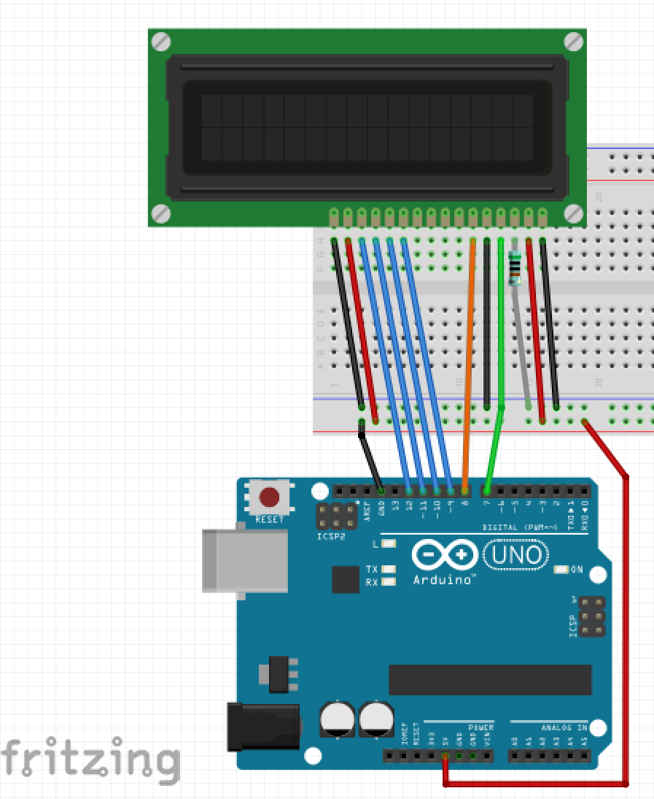

Atividade 4 - Display LCD
Diagrama de fiação
Agora que você domina os sinais de saída para LEDs, vamos ver a exibição de texto com uma exibição simples. Apenas 1 resistor (5K) é usado para limitar o brilho do display. Tente ligar isso de acordo com o diagrama sem instruções específicas.

O Código:
//www.elegoo.com
//2016.12.9
/*
Biblioteca LiquidCrystal - Hello World
Demonstra o uso de uma tela LCD 16x2. O Cristal Líquido
biblioteca funciona com todos os monitores LCD que são compatíveis com o
Hitachi HD44780 driver. Há muitos deles por aí, e você
geralmente pode dizê-los pela interface de 16 pinos.
Este esboço imprime "Hello World!" no LCD
e mostra o tempo.
O circuito:
* Pino RS LCD para pino digital 7
* LCD Ativar pino para pino digital 8
* LCD D4 pino para pino digital 9
* LCD D5 pino para pino digital 10
* LCD D6 pino para pino digital 11
* LCD D7 pino para pino digital 12
* LCD R / W pino ao solo
* LCD VSS pino à terra
* LCD VCC pino para 5V
* Resistor de 10K:
* termina a +5V e terra
* limpador para pino VO LCD (pino 3)
Biblioteca adicionada originalmente 18 abr 2008
por David A. Mellis
biblioteca modificada 5 jul 2009
por Limor Fried (http://www.ladyada.net)
exemplo adicionado 9 jul 2009
por Tom Igoe
modificado 22 nov 2010
por Tom Igoe
Este código de exemplo é de domínio público.
http://www.arduino.cc/en/Tutorial/LiquidCrystal
*/
// incluir o código da biblioteca:
#include <LiquidCrystal.h>
// Inicializar a biblioteca com os números dos pinos da interface
LiquidCrystal lcd(7, 8, 9, 10, 11, 12);
void setup() {
// configure o número de colunas e linhas do LCD:
lcd.begin(16, 2);
// Imprima uma mensagem no LCD.
lcd.print("Hello, World!");
}
void loop() {
// Defina o cursor para a coluna 0, linha 1
// (nota: a linha 1 é a segunda linha, uma vez que a contagem começa com 0):
lcd.setCursor(0, 1);
// Imprima o número de segundos desde a reposição:
lcd.print(millis() / 1000);
}